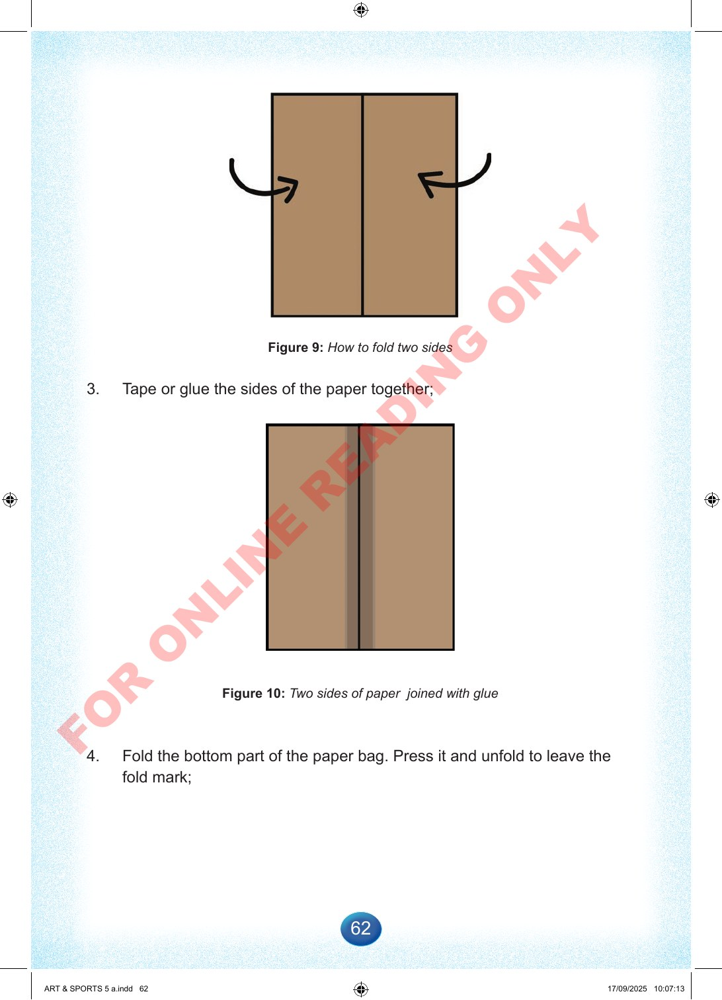

62
Figure
9:
How
to
fold
two
sides
3.
Tape
or
glue
the
sides
of
the
paper
together;
Figure
10:
Two
sides
of
paper
joined
with
glue
4.
Fold
the
bottom
part
of
the
paper
bag.
Press
it
and
unfold
to
leave
the
fold
mark;
ART
&
SPORTS
5
a.indd
62
ART
&
SPORTS
5
a.indd
62
17/09/2025
10:07:13
17/09/2025
10:07:13
F
O
R
O
N
L
I
N
E
R
E
A
D
I
N
G
O
N
L
Y